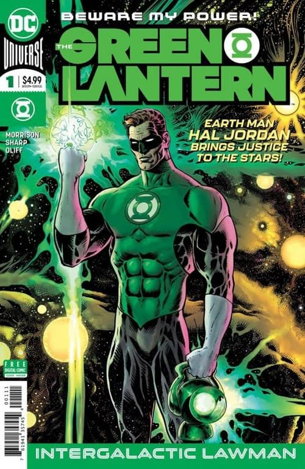

Reading Era
Morrison & Sharp
Hal Jordan investigates strange cases across the cosmos.

2018 – 2021
Start with The Green Lantern #1, released November 7, 2018.
The story
Grant Morrison and Liam Sharp frame Hal Jordan as an intergalactic police officer. His strange cases build into a larger conspiracy, drawing on the Corps' history and the possibilities of alien societies.
The first season leads into Green Lantern: Blackstars, illustrated by Xermanico, before Season Two reunites Morrison and Sharp. The 2019 annual, illustrated by Giuseppe Camuncoli, adds a side story involving Hal's family.
Knowing Hal and the Guardians helps, but you do not need to finish every earlier run. The first issue's January 2019 cover date differs from its November 2018 release. Use the Morrison reading guide for the full sequence and collection contents.
DC sources: first issue and release date, Blackstars credits, and annual credits.
Key series
- The Green Lantern #1–12 (first season)
- Green Lantern: Blackstars #1–3
- The Green Lantern Season Two #1–12
- Optional side story: The Green Lantern Annual #1 (2019)
Season Two Vol. 1 includes Blackstars #1–3 and Season Two #1–6. Vol. 2: Ultrawar contains #7–12. You do not need a separate Blackstars edition if your collection already includes it.
Key characters

The Green Lantern (2018) #1 — main cover. Liam Sharp (cover art); Steve Oliff (cover colors). Artwork source & details.
Artwork credits (2 images)
Credits refer to the illustrations shown here. Open a record for sources, adaptations and unresolved details. Some artwork and source pages contain story spoilers.
- Morrison — The Green Lantern (2018) #1 — main cover. Liam Sharp (cover art); Steve Oliff (cover colors).
- Hal Jordan — Hal Jordan and the Green Lantern Corps #45 (2018), Tyler Kirkham variant cover, cropped detail. Tyler Kirkham (cover pencils and inks); Arif Prianto (cover colors).